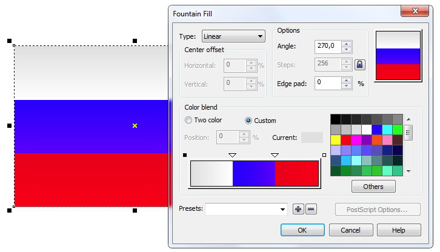
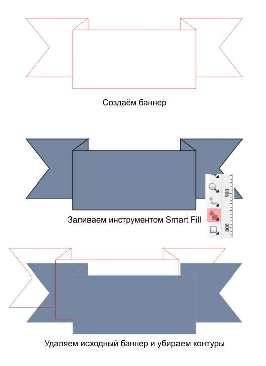
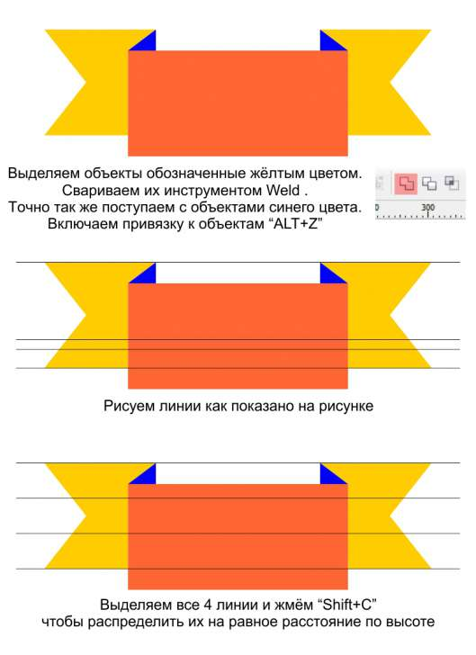
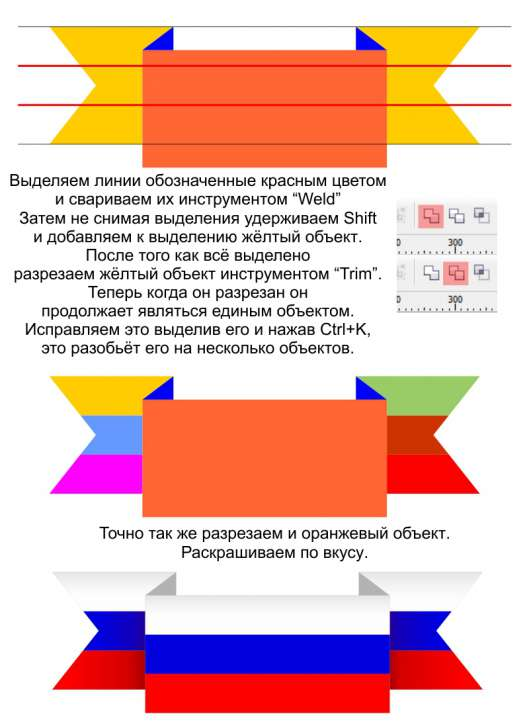

Частичная заливка объекта в Corel Draw X5
Denk / 16.10.2010, 19:03/00:41
Форум:
Уважаемые Господа!
Помогите решить такую проблему. Как залить часть объекта в Corel Draw X5?
Поясню на примере. Создал прямоугольник и надо сделать из него например российский флаг. Как залить только одну треть объекта?
Мне пришлось создавать сначала прямоугольник с размерами равными 1/3 от исходного и копировал его 2 раза.
Может кто знает как решить эту проблему без коприрования и как можно заливать только часть объекта?
Можно. Вот так например

Но что не устраивает в создании трёх полосок?
Спасибо за ответ)! В принципе все устривает. Просто хотелось узнать если функция как в фотошопе когда можно выделить часть обекта и залить его. Вот например, если взять фигуру в Corel draw/ банер в виде ленты и как его залить тремя цветами? Копировать его уже не получиться.
Denk, зачем одну и ту же тему создавать 2 раза?



Вам стоит возможно полистать хелп на досуге. И перестать подходить к корелу с фразой "как в фотошопе"
а можно сделать немножко быстрее вот таким образом...
Тоже зашибись.